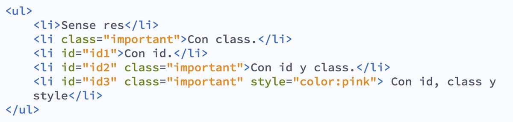

listas y enlaces en HTML
Las listas en HTML nos permiten crear conjuntos de elementos en forma de lista dentro de una página, todos los cuales irán precedidos, generalmente, por un guion o número.


Los tipos de listas en HTML son los siguientes:
Listas Ordenadas
Si lo que pretendemos es definir una lista ordenada, lo tendremos que hacer entre las etiquetas <ol> (ol indica ordered list). Además, cada elemento de la lista se escribirá con la misma etiqueta que para las listas no ordenadas: <li >. Pero al ser listas ordenadas los símbolos por defecto serán números y éstos se irán generando automáticamente por orden, conforme escribamos nuevos elementos de la lista.En las listas ordenadas podemos hacer que el primer punto comience con el número que nosotros queramos. Lo conseguiremos gracias al atributo “value”. Los siguientes puntos que escribamos se generarán automáticamente por orden, partiendo de ese número.
Un ejemplo de lista ordenada sería el siguiente:
- Julio
- Carmen
- Ignacio
- Elena
Listas no ordenadas
Las listas no ordenadas son aquellas que se encuentran entre las etiquetas <ul > (ul indica unordered list), etiqueta de apertura y cierre respectivamente. Si queremos añadir un nuevo punto, lo tendremos que hacer dentro de las etiquetas <li >. Si no le indicamos nada a la etiqueta <li >, la viñeta o marca que indica que se trata de un elemento de una lista se generará de forma automática. Pero si queremos definir nosotros mismo el símbolo del punto o marca a emplear, debemos indicarlo específicamente.Una lista no ordenada se usa cuando se enumeran elementos sin que el orden tenga relevancia:
Un ejemplo de lista ordenada sería el siguiente:
- Juan
- Manuel
- Pedro
- Gonzalo
LISTAS DE DEFICIONES O DE DESCRIPCIONES
Este tipo de listas no es de uso frecuente, por lo que vamos a citarlas solo por si encontramos este tipo de código en alguna página web poder interpretar su significado. Las listas de definiciones se usan cuando queremos hacer una enumeración tipo “diccionario” donde tenemos varios términos y su definición o descripción. Para crear una lista de definiciones debemos usar las etiquetas <dl>, <dt > y <dd >.Vamos a explicarlas por partes:
La etiqueta <dl > indica que dentro de ella va a ir una lista de definiciones o lista de descripciones.La etiqueta <dt > indica que dentro de ella va un término que vamos a definir.
La etiqueta <dd >nos dice que dentro de ella se encuentra una definición o descripción asociada a un término.
Un término podría tener varias descripciones.
Por ejemplo, el término Autor podría tener como descripciones: Mateo Renzi, Olivo Pascua, Jorge Guillén.
ANIDAMIENTO O USO SIMULTÁNEO (COMBINACIÓN) DE VARIOS TIPOS DE LISTAS
Si lo deseamos, podemos combinar unos tipos de listas con otros. Por ejemplo, tener listas ordenadas dentro de cada elemento de una lista desordenada. Veamos un ejemplo. Escribe el siguiente código en un editor de texto como bloc de notas o Notepad++ y guárdalo con un nombre de archivo como ejemploCU00718B.html.Enlaces en HTML
Lo que caracteriza a la web como medio de comunicación es la navegación por medio de hipervínculos (links o enlaces). Esta conexión entre archivos permite al usuario elegir el sentido de la navegación. En el HTML los enlaces se marcan con la etiqueta <a > y el atributo principal es <href ="" >donde se escribe la ubicación del archivo de destino que puede estar en la misma carpeta que el archivo que lo está llamando, en otra carpeta del mismo sitio o en otro sitio web.Entre las etiquetas <a href = "" a > se puede colocar cualquier elemento html que funcionará como botón, generalmente se coloca un texto o una imagen. Si es un texto, el navegador por defecto lo muestra en color azul y subrayado.
Rutas de enlaces:
Se llama ruta al valor que se escribe dentro del atributo <href="" > y se pueden clasificar en dos tipos:Rutas absolutas:
Las rutas absolutas son las que definen la ubicación completa de un archivo en la web y empiezan desde https://nombredelsitio.com/archivo.html (el archivo de destino puede ser de cualquier extensión).Por ejemplo, si queremos vincular nuestro sitio con Facebook, usaríamos una ruta absoluta y el código sería:
<a href="https://www.facebook.com/pagina"> Estamos en Facebook <a >
Rutas relativas:
Las rutas relativas en cambio definen la ubicación del archivo de destino en relación a la ubicación del archivo que lo está llamando.Ejemplo: si el archivo index.html vincula con quien-soy.html y están en la misma carpeta, el código sería asi:
<a href="quien-soy.html"> >Quién soy <a >.
Tipos de enlaces
Enlaces internos entre archivos .html
Son los enlaces principales de un sitio. Si en el archivo index.html, queremos agregar un vínculo a contacto.html el código sería así:<a href="contacto.html">Contáctenos <a >
El texto que queda encerrado entre las etiquetas <a >es lo que ve el usuario en color azul y subrayado.
Enlaces externos
Son los enlaces entre diferentes sitios web. Si queremos vincular un sitio web con otro, tenemos que indicar la ruta absoluta del sitio escribiendo la url completa que conviene copiarla del navegador.En este caso, es común usar el atributo target="" que nos permite abrir el enlace en una pestaña nueva. Por ejemplo, si quisiera poner un vínculo a Instagram y que éste abra en pestaña nueva, sería así:
<href="https://www.instagram.com/laurachuburu/" target="_blank >Instagram <a >.
Enlaces internos: anclas
Las anclas son enlaces hacia un punto determinado dentro de un html. Se usa en varios casos, por ejemplo, en una página de preguntas frecuentes donde las respuestas están desarrolladas debajo de las preguntas, o en Wikipedia, cuando el texto es extenso el menú tiene vínculos con anclas. También en los textos largos, a la derecha de la pantalla generalmente se coloca un botón para subir. En los sitios de una sola página donde los botones en realidad hacen scroll, esas son anclas.El punto de destino tiene que estar marcado con el atributo id="algo" y en el enlace se coloca un # (numeral) seguido del nombre.
Por ejemplo: <a href="#respuesta4> Pregunta 4 "> <a >"salta" a este párrafo: <p id"respuesta4">acá está escrita la respuesta> <p >
Enlaces para ampliar una imagen
Es común armar una galería de fotos con imágenes miniaturas que vinculan a imágenes ampliadas. Si combinamos este recurso con código javascript, logramos galerías de fotos muy atractivas.El código HTML es así:
<a href="imagenes/foto1-ampliada.jpg"><img src="imagenes/foto1-miniatura.jpg" alt="descripción de la foto">, <a >
El navegador le muestra al usuario la foto miniatura y si cliquea en ella, le muestra la foto ampliada.
Enlaces para descargar archivos
En realidad, dentro del atributo href="" podemos colocar la ruta hacia cualquier tipo de archivo. Si el navegador reconoce la extensión, lo abre, por ejemplo: html, jpg, png, gif, svg, pdf, etc. Pero si no lo reconoce o es un archivo comprimido (.rar, .zip), el navegador le ofrece al usuario descargarlo. Ejemplo: <a href="fotos.rar" >Descargá todas las fotos <a >.Enlaces a una dirección de correo
Se puede vincular una dirección de correo para que abra en el programa de correo predeterminado.El código se escribe así:
Consúltenos por mail a <a href="mailto:info@dominio.com" >info@dominio.com <a >.
Referencias:
Laura, C (n.d) Tipos de enlaces en HTML: COPYRIGHT © 2022 LAURA CHUBURU, from:
https://laurachuburu.com.ar/tipos-de-enlaces-en-html/
Martínez pintor, J.A ( n.d) INTRODUCCION A HTML, febrero 28, 2015,from:
https://sites.google.com/site/htmlintroduccion/listas-en-html